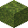
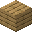
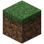
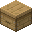

Blocos que você coloca no mundo.

Minério de Mana
Minério raro que aparece sozinho nas profundezas (camada -64 a -50). Precisa de picareta de ferro; com picareta de diamante solta Orbes de Mana (Fortuna aumenta). Com Toque Suave, solta o próprio bloco.
Como obter
Encontrado nas profundezas do mundo.

Nature Infuser
Transforma itens com a força da natureza ao redor. Entrada em cima, alimentação embaixo (combustível vegetal ou o catalisador da infusão) e saída à direita. Funis: entrada por cima, alimentação pelos lados, saída por baixo.
Bancada de trabalho



Força da natureza
Conta os blocos num raio de 5 (inclusive acima e abaixo). Cada tipo soma até um limite; terra comum não conta. Sem natureza nenhuma, o infusor não funciona.
| Bloco | Limite | Força máxima |
|---|
 Grama | 25 | 1x |
 Flores Flores | 5 | +0,25x |
 Folhas de árvore Folhas de árvore | 15 | +0,25x |
| Pedestal com folhas | 1 | +0,5x |
 Colmeia | 1 | +0,25x |
Todas as infusões
| Entrada | Alimentação | Resultado |
|---|
| Diamante | combustível vegetal | Cristal Instável |
| Molde de melhoria de netherita | Essência de Mana | Molde de Manilium |
| Peça de Manilium | Orbe de Mana | +1 de defesa (até +5) |
| Espada de Manilium | Orbe de Mana | +1 de dano (sem limite) |
| Espada de Manilium (vazia) | Bloco Mágico | bloco na guarda da espada |
| Qualquer peitoral | Conversor de Almas | peitoral com conversor |
| Spawner sem Vida | Barra de Manilium | Spawner de Manilium |
| Bloco de Água | Gelo Azul | Bloco de Gelo |
| Bloco de Fogo | Bloco de Redstone | Bloco de Fogo Vermelho |

Spawner de Manilium
Um spawner melhorado: cria as criaturas mesmo com luz, mas só enquanto recebe sinal de redstone. Clique nele com um ovo gerador para escolher a criatura. Quebra com qualquer picareta e guarda a criatura escolhida.
Nature Infuser
em cima: entrada · embaixo: alimentação